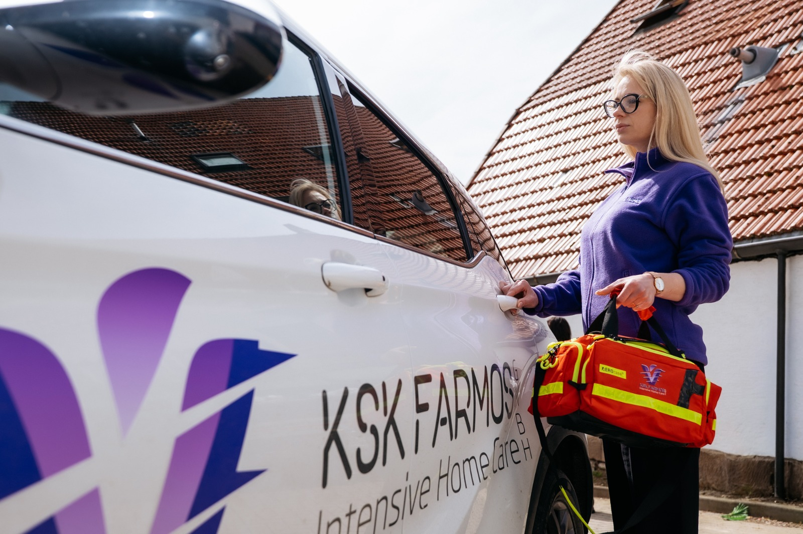

Unsere medizinischen Leistungen
Intensivpflege zu Hause, einzigartige Wohnkonzepte und ständige Weiterbildung — alles aus einer Hand.
Die Beatmungspflege ist unsere Kernkompetenz.
Die erfahrenen Pflegefachkräfte für außerklinische Beatmung betreuen Klienten mit moderner Technik und in enger Zusammenarbeit mit Fachärzten für Pneumologie.

Professionelle Pflege in Ihren eigenen vier Wänden
Wir versorgen Menschen mit schweren Erkrankungen in ihrem gewohnten Umfeld — 24 Stunden am Tag, 7 Tage die Woche, 365 Tage im Jahr.
- Grund- und Behandlungspflege
- Medikamentenmanagement
- Vitalzeichenüberwachung und Monitoring
- Invasive und nicht-invasive Beatmung
- Trachealkanülenmanagement
- Wundversorgung und Ernährungstherapie
- Pflegeplanung und Dokumentation
- Koordination mit Ärzten und Therapeuten
Wen wir versorgen
Beatmungspatienten
Spezialisierte Intensivpflege für Menschen, die auf invasive oder nicht-invasive Beatmung angewiesen sind. Wir sichern die lückenlose Überwachung und professionelles Gerätemanagement.
Wachkoma (Apallisches Syndrom)
Ganzheitliche Langzeitversorgung für Patienten mit schweren Bewusstseinsstörungen. Unser Fokus liegt auf basaler Stimulation und der Erhaltung von Körperfunktionen.
ALS / Neurologische Erkrankungen
Individuelle Begleitung bei fortschreitenden neurologischen Veränderungen — empathisch, fachlich fundiert und auf die Erhaltung der Lebensqualität ausgerichtet.
Querschnittslähmung
Professionelle Unterstützung und pflege für Menschen mit Rückenmarksverletzungen. Wir fördern die Selbstständigkeit und beugen gezielt Komplikationen vor.
Schädel-Hirn-Trauma
Langfristige Versorgung nach schweren Hirnverletzungen. Zielgerichtet auf die Stabilisierung des Zustands und Unterstützung im Alltag.

Was Sie erwartet
Unser ambulanter Pflegedienst ist auf die Betreuung von Menschen mit Demenz in verschiedenen Wohnprojekten spezialisiert. In einer geschützten, häuslichen Umgebung ermöglichen wir ein würdevolles Leben mit Struktur, Sicherheit und individueller Zuwendung.
- Zimmer mit eigenen Möbeln
- Alle notwendigen medizinischen Geräte
- Großzügigen Garten
- Bibliothek und Gemeinschaftsräume
- 24h Betreuung und Überwachung
- Umfassende pflegerische und medizinische Leistungen
- Individuell gestalteter Tagesablauf
- Validation und aktivierende Betreuung
- Förderung von vorhandenen Fähigkeiten.
Individuelle Pflegeberatung
Wir bieten individuelle Pflegeberatungen für Pflegebedürftige und Angehörige zur optimalen Versorgung im häuslichen Umfeld.
Pflegegrade & Leistungen
Beratung zu Pflegegraden und Leistungen der Pflegekasse.
Anleitung für Angehörige
Anleitung von Angehörigen zur häuslichen Pflege.
Hilfsmittel-Organisation
Hilfe bei der Organisation von Hilfsmitteln (Pflegebett, Rollatoren etc.).
Demenz & Verhalten
Beratung zu Demenz und Umgang mit herausforderndem Verhalten.
Entlastungsangebote
Aufklärung und Erklärung über Entlastungsangebote für pflegende Angehörige.
Wohnraumanpassung
Beratung zur Wohnraumanpassung und Barrierefreiheit.
Wer die Kosten trägt
Intensivpflegedienst KSK Farmos GmbH & Co. KG übernehmen nach Erhalt einer Vollmacht die Verhandlungen mit den Kostenträgern bezüglich Kostenübernahme.
Krankenkasse (SGB V)
- Arztbesuche und Therapien (Physio-, Ergo-, Logopädie)
- Krankenhausbehandlung
- Arznei-, Heil- und Hilfsmittel (z. B. Rollstuhl, Pflegebett – mit Genehmigung)
- Häusliche Krankenpflege bei akuter Krankheit oder nach Krankenhaus
Pflegekasse (SGB XI)
Sozialamt
Private Versicherung
Kostenlose Beratung
Wir beraten Sie persönlich — kostenlos und unverbindlich.
Lassen Sie uns sprechen